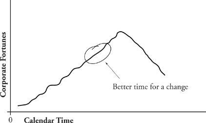

Change: What You’re Up Against
You, as a corporate change agent, probably have no strong commitment to the current way of doing business, but that doesn’t mean that no one else does. After all, once the change is successfully made, you’re likely to wander off to change something else, while those whose world you’ve just thrown into turmoil are going to have to stick around and live with the results. As long as people tend to define themselves at least partially in terms of the work they do, any change to that work, its procedures and modes, is likely to have self-definitional importance to them. This can lead to surprising amounts of change resistance.
Let me put this into perspective: You’re David, and the change resistance you’re likely to encounter, to even the most innocent-seeming change, is Goliath. You’re a puny little human and Goliath is a giant, six cubits tall. (For purposes of this discussion, assume that 1 cubit = 1 mile.) Of course, in the story, David did slay Goliath, but remember that David had heavenly support. Unless there is some reason to believe that God is on your side and personally committed to your organization’s transformation, then the rest of us are going to be inclined to bet on Goliath.
You clearly need some serious advantages working for you to be able to overcome this level of resistance. Among the advantages are (1) a set of sensible approaches to change introduction and (2) a culture that is not change-phobic. Rather than offer specific advice in these two categories, I’m going to refer you instead to a book about change introduction1 and one about corporate culture2 and concentrate here on the third advantage you’ll require: (3) proper timing.
The Goliath-like resistance to change is not exactly logical; it’s much more likely to be emotional. How people feel can be more a factor in the success of a change than what they think. Anxiety of any kind can only complicate the task of change introduction. That’s why the period of sudden decline of corporate fortunes is exactly the worst moment to introduce a change. People are uneasy about their jobs, worried about lasting corporate health, perhaps shocked by the vitality of the competition.
In retrospect, a far better time to introduce the change would have been back in the period of healthy growth. Growth always carries with it a certain necessity for change. You may have to hire more people, expand to larger quarters, diversify or centralize, all to accommodate your own burgeoning success. But growth feels good; it feels like winning. It even feels good enough to reduce the amount of change resistance. Since growth is winning, people look at growth-related change entirely differently.
